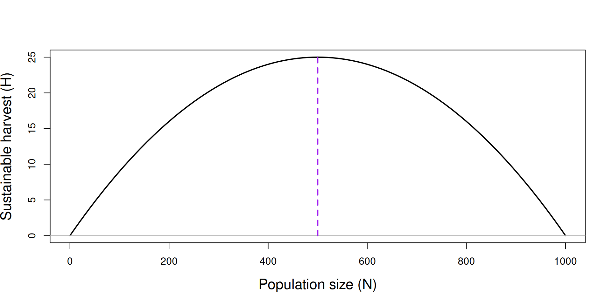
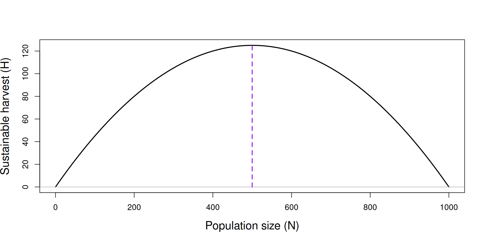
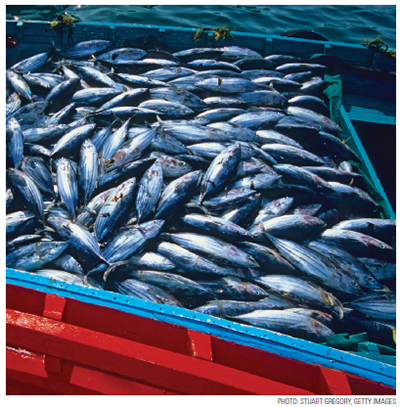
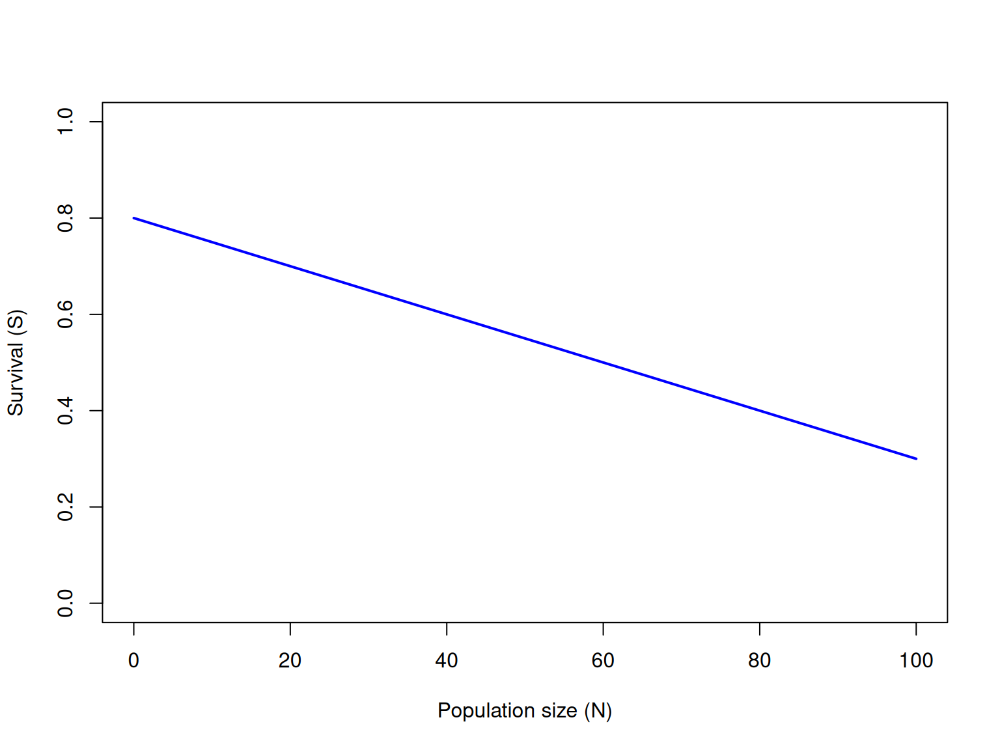
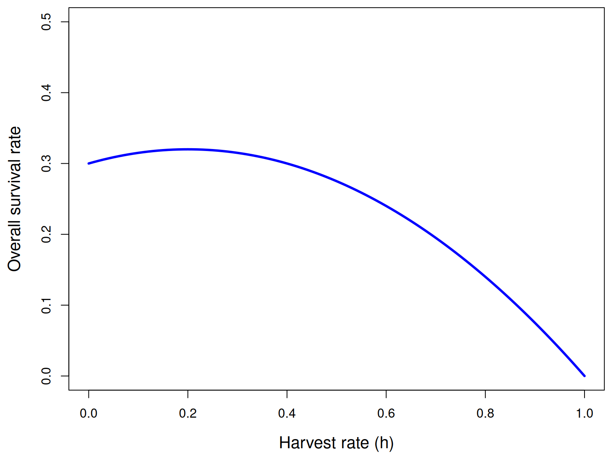
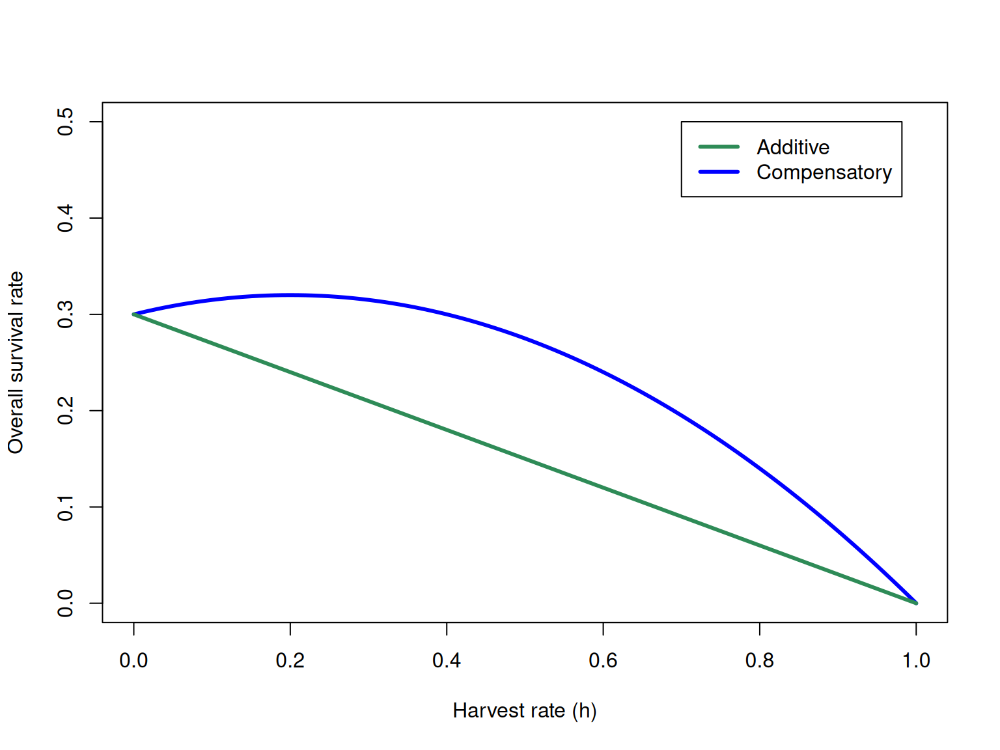
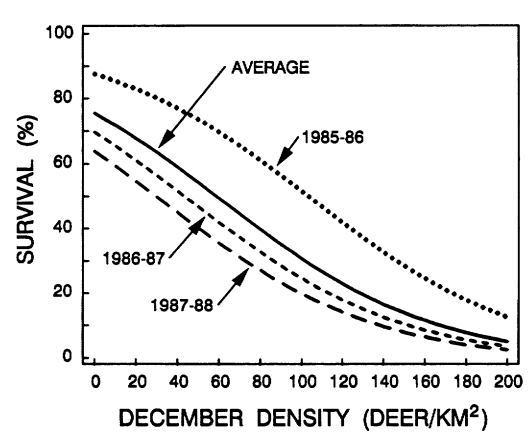

Background
Harvest Models
Applied Population Dynamics
WILD 5700/7700
Learning objectives
Sustainable harvest and geometric growth.
Sustainable harvest and logistic growth.
Definition of maximum sustainable yield (MSY).
Limitations of MSY.
Additive vs compensatory mortality.
Sustainable harvest
A sustainable (and large) harvest is a common objective in game management.
Sustainable harvest: A harvest that is balanced by population growth such that \(N_{t+1} = N_t\).
Geometric growth and harvest
Harvest and geometric growth
\[ N_{t+1} = N_t + N_t r \]
\[ N_{t+1} = N_t + N_t r - \color{red}{H_t} \]
where \(\color{red}{H_t}\) is the number of animals harvested at the end of year \(t\).
What value of \(H_t\) achieves equilibrium (i.e., \(N_{t+1} = N_t\))?
Sustainable harvest and geometric growth
A sustainable harvest in this context is: \[ H_t = N_t r \]
Consequently, the sustainbale harvest rate (\(h\)) is:
\[ \begin{align*} h &= \frac{H_t}{N_t} \\ h &= r \\ \end{align*} \]
Harvest and logistic growth
Harvest and logistic growth
\[ N_{t+1} = N_t + N_t r_{max}\left(1 - \frac{N_t}{K} \right) - \color{red}{H_t} \]
Sustainable harvest and logistic growth
\[ H_t = N_t r_{max}\left(1 - \frac{N_t}{K} \right) \]
In this case, the sustainable harvest rate (\(h\)) depends on population size:
\[ \begin{align*} h_t &= \frac{H_t}{N_t} \\ h_t &= r_{max}\left(1 - \frac{N_t}{K} \right) \\ \end{align*} \]
Example when K=1000 and rmax=0.1
\[ H_t = N_t r_{max}\left(1 - \frac{N_t}{K} \right) \]
Example when K=1000 and rmax=0.5
\[ H_t = N_t r_{max}\left(1 - \frac{N_t}{K} \right) \]

Maximum sustainable yield
MSY is found when \(N=K/2\)
The maximum yield is \(H = r_{max}K/4\)
The optimal harvest rate is \(h = r_{max}/2\)
Is MSY useful in practice?

Issues
Larkin, P.A. 1977. An epitaph for the concept of maximum sustained yield. Transactions of the American Fisheries Society 106: 1-11.
- Same assumptions as logistic growth model
- K is constant
- No age/sex/individual variation
- No stochasticity
- Ecosystem impacts of reducing a population to half its carrying capacity?
- Evolutionary consequences?
Compensatory mortality
Additive vs. compensatory mortality
- One possible mechanism giving rise to logistic growth is density-dependence in survival.
- For example, if population size is reduced, survival of the remaining individuals might increase.
- If harvest is compensated for by improved survival, harvest is a form of compensatory mortality.
- However, if harvest is not compensated for by improved survival, harvest is a form of additive mortality.
Compensatory mortality example
Suppose a population of 100 white-tailed deer is subjected to harvest.
Harvest takes place prior to any natural mortality.
Natural mortality occurs in a density dependent fashion, such that survival probability (\(S\)) declines as \(N\) increases.
Let’s assume: \[S = 0.8 - 0.005 \times N\]
Compensatory mortality example
\[S = 0.8 - 0.005 \times N\]

Compensatory mortality example
\[S = 0.8 - 0.005 \times N\]
Suppose 20 individuals are harvested from the initial population of 100 individuals.
How many individuals will remain at the end of the year?
How many would have remained at the end of the year if no hunting had occurred?
Compensatory mortality example
The overall survival rate (\(\bar{S}\)) is product of survival throughout the hunting season (\(1-h\)) and survial after the hunting season.
\[ \bar{S} = (1-h)(\beta_0 - \beta_1 (N - Nh)) \]
Compensatory mortality example


Density-dependent survival example
Mule deer fawn survival (From Bartman et al. 1992)

Summary
- If growth is geometric, sustainable harvest occurs when \(h=r\).
- If growth is logisitic, maximum sustainable yield occurs at \(N=K/2\).
- If survival is density-dependent, harvest mortality can be compensated for by increased survival of remaining individuals (up to a point).
- If mortality is additive, extra caution is needed because harvest is adding to natural mortality without any compensation.
- Managers need to know if harvest mortality is additive or compensatory when setting harvest regulations.